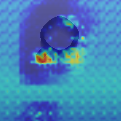
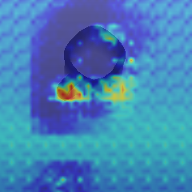

Contrastively Learning Visual Attention as Affordance Cues from Demonstrations for Robotic Grasping


https://sites.google.com/asu.edu/affordance-aware-imitation/project


Grasping Affordance
Grasping Affordance
ACRONYM,
Eppner et al., ICRA, 2021
Learning 6-dof task-oriented grasp detection via implicit estimation and visual affordance,
Chen, et al., IROS, 2022
✅ Affordance prediction can directly be used by a motion planner
✅ Affordance prediction can directly be used by a motion planner
❌ Human annotation of affordances incurs significant costs
Learning Affordance
from Demonstrations?
Learning Affordance from Demonstrations
Learning Affordance from Demonstrations
Learning Grasp Affordances Through Human Demonstration,
Granville et al., ICDL, 2006

Learning a dictionary of prototypical grasp-predicting parts from grasping experience,
Renaud, et al., ICRA, 2013
Learning Affordance from Demonstrations
Learning Grasp Affordances Through Human Demonstration,
Granville et al., ICDL, 2006
Learning a dictionary of prototypical grasp-predicting parts from grasping experience,
Renaud, et al., ICRA, 2013


Learning Affordance from Demonstrations
Learning Grasp Affordances Through Human Demonstration,
Granville et al., ICDL, 2006
Learning a dictionary of prototypical grasp-predicting parts from grasping experience,
Renaud, et al., ICRA, 2013
✅ Eliminates the need for expensive affordance labeling
✅ Eliminates the need for expensive affordance labeling
❌ A motion planner is required to translate affordance predictions into grasp execution,
keeping affordance learning and policy construction/learning as distinct processes.
Insights from Human Cognition
Insights from Human Cognition

Insights from Human Cognition
 Affordance and attention share a close association, influencing how humans interact with objects
Affordance and attention share a close association, influencing how humans interact with objects
Human attention naturally gravitates towards object parts essential for task completion
Visual Attention as Affordance Cues
Visual Attention as Affordance Cues
Affordances are often implicitly encoded in visual attention
Visual Attention as Affordance Cues
Affordances are often implicitly encoded in visual attention
Visual attention directs focus towards relevant features indicating potential actions
Why Predict Affordance Cues?
Why Predict Affordance Cues?
Predicting affordance cues (salient visual features) is more efficient than predicting entire affordances
Why Predict Affordance Cues?
Predicting affordance cues (salient visual features) is more efficient than predicting entire affordances
Bridging the Gap: Affordance cues serve as a vital intermediary, facilitating the seamless integration between perception and policy construction
Merging the learning of affordance-cues and policy learning
Merging the learning of affordance-cues and policy learning

The robot not only replicates expert behavior but also assimilates the tacit affordance knowledge of the teacher


 



Can you propose any strategies for discovering affordance-cues?
Ask Yourself:
What distinguishes the two trajectories from each other
Contrastive Learning
Contrastive Learning
Contrastive learning is a machine learning technique aimed at understanding the underlying features of a dataset without labels
Contrastive Learning
Contrastive learning is a machine learning technique aimed at understanding the underlying features of a dataset without labels
It achieves this by instructing the model to discern similarities and differences between data points
Contrastive Learning
Contrastive learning is a machine learning technique aimed at understanding the underlying features of a dataset without labels
It achieves this by instructing the model to discern similarities and differences between data points
Contrastive Learning
Contrastive learning is a machine learning technique aimed at understanding the underlying features of a dataset without labels
It achieves this by instructing the model to discern similarities and differences between data points

Contrastive Learning for Affordance Discovery
Sample a trajectory from this category: $sample$-$a$

Sample a trajectory from the same
category as $sample$-$a$: $sample$-$p$
Sample a trajectory from a different
category as $sample$-$a$: $sample$-$n$
Contrastive Learning for Affordance Discovery
Contrastive Learning for Affordance Discovery
Contrastive Learning for Affordance Discovery

Contrastive Learning for Affordance Discovery

The Limitations of Directly Employing Triplet Loss
The Limitations of Directly Employing Triplet Loss
Recall: Affordances are featured in the interactions between a robot and an object, resulting in desired effects
The Limitations of Directly Employing Triplet Loss
Recall: Affordances are featured in the interactions between a robot and an object, resulting in desired effects
The demonstration data contains irrelevant information for affordance discovery
The Limitations of Directly Employing Triplet Loss
Recall: Affordances are featured in the interactions between a robot and an object, resulting in desired effects
The demonstration data contains irrelevant information for affordance discovery
It may condition on noisy context factors (e.g. initial states, obstacles)
Affordance-Aware Imitation Learning
Learn Two Types of Embeddings
Affordance Embedding $Z^A$ for demo trajectory $\tau^*$: $$z_\tau^A=F^A(\{(s_t,a^*_{t-1})\}^n_{t=m}|_{\tau^*})$$
Observation Embedding $Z^{o,A}_t$ for demo trajectory $\tau^*$: $$z_{t,\tau}^{o,A}=F^O(s_t,o_t,a^*_{t-1}|_{\tau^*})$$
Learn Two Types of Embeddings
Affordance Embedding $Z^A$ for demo trajectory $\tau^*$: $$z_\tau^A=F^A(\{(s_t,a^*_{t-1})\}^n_{t=m}|_{\tau^*})$$
Observation Embedding $Z^{o,A}_t$ for demo trajectory $\tau^*$: $$z_{t,\tau}^{o,A}=F^O(s_t,o_t,a^*_{t-1}|_{\tau^*})$$
How to couple their learning together?
Guiding Observation Embedding Learning through Affordance Embeddings


Guiding Observation Embedding Learning through Affordance Embeddings
Coupled Triplet Loss
Enhance the Relevance of $Z^{o,A}_t$ to Affordances
Simultaneously learning affordance cues and a grasping policy
Simultaneously learning affordance cues and a grasping policy

Evaluation
Evaluation
A Franka Panda Arm in the PyBullet simulator
Full Model: Siamese + Coupled Triplet Loss


Ablation 1 (Right): Siamese + Triplet Loss
Ablation 2 (Left): Without Contrastive Learning
Success Rate (Percentage)
Full Model:
Siamese + Coupled Triplet Loss
Ablation 1:
Siamese + Triplet Loss
Ablation 2:
Without Contrastive Learning